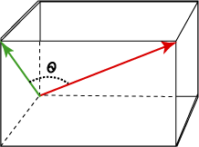

Chapter 6 Norms, Similarity, and Distance
6.1 Norms and Distances
In applied mathematics, Norms are functions which measure the magnitude or length of a vector. They are commonly used to determine similarities between observations by measuring the distance between them. As we will see, there are many ways to define distance between two points.
Definition 6.1 (Vector Norms and Distance Metrics) A Norm, or distance metric, is a function that takes a vector as input and returns a scalar quantity (\(f: \Re^n \to \Re\)). A vector norm is typically denoted by two vertical bars surrounding the input vector, \(\|\bo{x}\|\), to signify that it is not just any function, but one that satisfies the following criteria:
- If \(c\) is a scalar, then \[\|c\x\|=|c|\|x\|\]
- The triangle inequality: \[\|\x+\bo{y}\| \leq \|\x\|+\|\bo{y}\|\]
- \(\|\x\|=0\) if and only if \(\x=0\).
- \(\|\x\|\geq 0\) for any vector \(\x\)
We will not spend any time on these axioms or on the theoretical aspects of norms, but we will put a couple of these functions to good use in our studies, the first of which is the Euclidean norm or 2-norm.
Definition 6.2 (Euclidean Norm, \(\|\star\|_2\)) The Euclidean Norm, also known as the 2-norm simply measures the Euclidean length of a vector (i.e. a point’s distance from the origin). Let \(\x = (x_1,x_2,\dots,x_n)\). Then, \[\|\x\|_2 = \sqrt{x_1^2 + x_2^2 + \dots + x_n^2} \] If \(\x\) is a column vector, then \[\|\x\|_2= \sqrt{\x^T\x}.\] Often we will simply write \(\|\star\|\) rather than \(\|\star\|_2\) to denote the \(2\)-norm, as it is by far the most commonly used norm.
This is merely the distance formula from undergraduate mathematics, measuring the distance between the point \(\x\) and the origin. To compute the distance between two different points, say \(\x\) and \(\y\), we’d calculate \[\|\x-\y\|_2= \sqrt{(x_1-y_1)^2 + (x_2-y_2)^2 + \dots + (x_n-y_n)^2}\]
Example 6.1 (Euclidean Norm and Distance) Suppose I have two vectors in \(3\)-space: \[\x=(1,1,1) \mbox{ and } \bo{y}=(1,0,0)\] Then the magnitude of \(\x\) (i.e. its length or distance from the origin) is \[\|\x\|_2=\sqrt{1^2+1^2+1^2}=\sqrt{3}\] and the magnitude of \(\bo{y}\) is \[\|\bo{y}\|_2=\sqrt{1^2+0^2+0^2}=1\] and the distance between point \(\x\) and point \(\bo{y}\) is \[ \|\x-\bo{y}\|_2=\sqrt{(1-1)^2 + (1-0)^2 + (1-0)^2} =\sqrt{2}.\] The Euclidean norm is crucial to many methods in data analysis as it measures the closeness of two data points.
Thus, to turn any vector into a unit vector, a vector with a length of 1, we need only to divide each of the entries in the vector by its Euclidean norm. This is a simple form of standardization used in many areas of data analysis. For a unit vector \(\x\), \(\x^T\x=1\).
Perhaps without knowing it, we’ve already seen many formulas involving the norm of a vector. Examples 6.2 and 6.3 show how some of the most important concepts in statistics can be represented using vector norms.
Example 6.2 (Standard Deviation and Variance) Suppose a group of individuals has the following heights, measured in inches: (60, 70, 65, 50, 55). The mean height for this group is 60 inches. The formula for the sample standard deviation is typically given as \[s = \frac{\sqrt{\sum_{i=1}^n (x_i-\bar{x})^2}}{\sqrt{n-1}}\]
We want to subtract the mean from each observation, square the numbers, sum the result, take the square root and divide by \(\sqrt{n-1}\).
If we let \(\bar{\x}=\bar{x}\e=(60,60,60,60,60)\) be a vector containing the mean, and \(\x=(60, 70, 65, 50, 55)\) be the vector of data then the standard deviation in matrix notation is: \[s=\frac{1}{\sqrt{n-1}}\|\x-\bar{\x}\|_2=7.9\]
The sample variance of this data is merely the square of the sample standard deviation: \[s^2 = \frac{1}{n-1}\|\x-\bar{\x}\|_2^2\]
Example 6.3 (Residual Sums of Squares) Another place we’ve seen a similar calculation is in linear regression. You’ll recall the objective of our regression line is to minimize the sum of squared residuals between the predicted value \(\hat{y}\) and the observed value \(y\): \[\sum_{i=1}^n (\hat{y}_i-y_i )^2.\] In vector notation, we’d let \(\y\) be a vector containing the observed data and \(\hat{\y}\) be a vector containing the corresponding predictions and write this summation as \[\|\hat{\y}-\y\|_2^2\]
In fact, any situation where the phrase “sum of squares” is encountered, the \(2\)-norm is generally implicated.
Example 6.4 (Coefficient of Determination, \(R^2\)) Since variance can be expressed using the Euclidean norm, so can the coefficient of determination or \(R^2\). \[R^2 = \frac{SS_{reg}}{SS_{tot}}= \frac{\sum_{i=1}^n (\hat{y_i}-\bar{y})^2}{\sum_{i=1}^n (y_i-\bar{y})^2} = \frac{\|\hat{\y}-\bar{\y}\|^2}{\|\y-\bar{\y}\|^2}\]
6.2 Other useful norms and distances
6.2.1 1-norm, \(\|\star\|_1\).
If \(\x=\pm x_1 & x_2 & \dots &x_n \mp\) then the \(1\)-norm of \(\X\) is \[\|\x\|_1 = \sum_{i=1}^n |x_i|.\] This metric is often referred to as Manhattan distance, city block distance, or taxicab distance because it measures the distance between points along a rectangular grid (as a taxicab must travel on the streets of Manhattan, for example). When \(\x\) and \(\y\) are binary vectors, the \(1\)-norm is called the Hamming Distance, and simply measures the number of elements that are different between the two vectors.

Figure 6.1: The lengths of the red, yellow, and blue paths represent the 1-norm distance between the two points. The green line shows the Euclidean measurement (2-norm).
6.2.2 \(\infty\)-norm, \(\|\star\|_{\infty}\).
The infinity norm, also called the Supremum, or Max distance, is: \[\|\x\|_{\infty} = \max\{|x_1|,|x_2|,\dots,|x_p|\}\]
6.3 Inner Products
The inner product of vectors is a notion that we’ve already seen in Chapter 2, it is what’s called the dot product in most physics and calculus text books.
Definition 2.3 (Vector Inner Product) The inner product of two \(n\times 1\) vectors \(\x\) and \(\y\) is written \(\x^T\y\) (or sometimes as \(\langle \x,\y \rangle\)) and is the sum of the product of corresponding elements. \[\x^T\y = \pm x_1 & x_2 & \dots & x_n \mp \pm y_1 \\y_2 \\ \vdots \\ y_n \mp = x_1y_1+x_2y_2+\dots+x_ny_n=\sum_{i=1}^n x_i y_i.\]
When we take the inner product of a vector with itself, we get the square of the 2-norm: \[\x^T\x=\|\x\|_2^2.\]
Inner products are at the heart of every matrix product. When we multiply two matrices, \(\X_{m\times n}\) and \(\bo{Y}_{n\times p}\), we can represent the individual elements of the result as inner products of rows of \(\X\) and columns of \(\Y\) as follows:
\[ \X\Y = \pm \xrow{1} \\ \xrow{2} \\ \vdots \\ \xrow{m} \mp \pm \ycol{1}&\ycol{2}&\dots&\ycol{p} \mp \\ = \pm \xrow{1}\ycol{1} & \xrow{1}\ycol{2} & \dots & \xrow{1}\ycol{p} \\ \xrow{2}\ycol{1} & \xrow{2}\ycol{2} & \dots & \xrow{2}\ycol{p} \\ \xrow{3}\ycol{1} &\xrow{3}\ycol{2} &\dots & \xrow{3}\ycol{p} \\ \vdots & \vdots & \ddots & \vdots \\ \xrow{m}\ycol{1} & \dots & \ddots & \xrow{m}\ycol{p} \mp \]
6.3.1 Covariance
Another important statistical measurement that is represented by an inner product is covariance. Covariance is a measure of how much two random variables change together. The statistical formula for covariance is given as \[\begin{equation} Covariance(\x,\y)=E[(\x-E[\x])(\y-E[\y])] \tag{6.1} \end{equation}\] where \(E[\star]\) is the expected value of the variable. If larger values of one variable correspond to larger values of the other variable and at the same time smaller values of one correspond to smaller values of the other, then the covariance between the two variables is positive. In the opposite case, if larger values of one variable correspond to smaller values of the other and vice versa, then the covariance is negative. Thus, the sign of the covariance shows the tendency of the linear relationship between variables, however the magnitude of the covariance is not easy to interpret. Covariance is a population parameter - it is a property of the joint distribution of the random variables \(\x\) and \(\y\). Definition 6.3 provides the mathematical formulation for the sample covariance. This is our best estimate for the population parameter when we have data sampled from a population.
Definition 6.3 (Sample Covariance) If \(\x\) and \(\y\) are \(n\times 1\) vectors containing \(n\) observations for two different variables, then the sample covariance of \(\x\) and \(\y\) is given by \[\frac{1}{n-1}\sum_{i=1}^n (x_i-\bar{x})(y_i-\bar{y}) = \frac{1}{n-1}(\x-\bar{\x})^T(\y-\bar{\y})\] Where again \(\bar{\x}\) and \(\bar{\y}\) are vectors that contain \(\bar{x}\) and \(\bar{y}\) repeated \(n\) times. It should be clear from this formulation that \[cov(\x,\y)=cov(\y,\x).\]
When we have \(p\) vectors, \(\v_1,\v_2,\dots,\v_p\), each containing \(n\) observations for \(p\) different variables, the sample covariances are most commonly given by the sample covariance matrix, \(\ssigma\), where \[\ssigma_{ij}=cov(\v_i,\v_j).\] This matrix is symmetric, since \(\ssigma_{ij}=\ssigma_{ji}\). If we create a matrix \(\V\) whose columns are the vectors \(\v_1,\v_2,\dots \v_p\) once the variables have been centered to have mean 0, then the covariance matrix is given by: \[cov(\V)=\ssigma = \frac{1}{n-1}\V^T\V.\] The \(j^{th}\) diagonal element of this matrix gives the variance \(\v_j\) since \[\begin{eqnarray} \ssigma_{jj}=cov(\v_j,\v_j) &=&\frac{1}{n-1}(\v_j-\bar{\v}_j)^T(\v_j-\bar{\v}_j) \\ &=&\frac{1}{n-1}\|\v_j-\bar{\v}_j\|_2^2\\ &=& var(\v_j) \end{eqnarray}\]
When two variables are completely uncorrelated, their covariance is zero. This lack of correlation would be seen in a covariance matrix with a diagonal structure. That is, if \(\v_1, \v_2,\dots, \v_p\) are uncorrelated with individual variances \(\sigma_1^2,\sigma_2^2,\dots,\sigma_p^2\) respectively then the corresponding covariance matrix is: \[\ssigma = \pm \sigma_1^2 & 0 & 0& \dots & 0\\ 0 & \sigma_2^2 & 0 & \dots & 0\\ 0 & 0 & \ddots & \vdots & 0 \\ \vdots & \vdots &\vdots & \ddots & \vdots \\ 0 & 0 & 0 & 0 & \sigma_p^2 \mp\] Furthermore, for variables which are independent and identically distributed (take for instance the error terms in a linear regression model, which are assumed to independent and normally distributed with mean 0 and constant variance \(\sigma\)), the covariance matrix is a multiple of the identity matrix: \[\ssigma = \pm \sigma^2 & 0 & 0& \dots & 0\\ 0 & \sigma^2 & 0 & \dots & 0\\ 0 & 0 & \ddots & \vdots & 0 \\ \vdots & \vdots &\vdots & \ddots & \vdots \\ 0 & 0 & 0 & 0 & \sigma^2 \mp =\sigma^2\bo{I}\]
Transforming our variables in a such a way that their covariance matrix becomes diagonal will be our goal in Chapter 13.
Theorem 6.1 (Properties of Covariance Matrices) The following mathematical properties stem from Equation (6.1). Let \(\X_{n\times p}\) be a matrix of data containing \(n\) observations on \(p\) variables. If \(\A\) is a constant matrix (or vector, in the first case) then \[cov(\X\A)=\A^Tcov(\X)\A \quad \mbox{ and } \quad cov(\X+\A)=cov(\X)\]
6.3.2 Mahalanobis Distance
Mahalanobis Distance is similar to Euclidean distance, but takes into account the correlation of the variables. This metric is relatively common in data mining applications like classification. Suppose we have \(p\) variables which have some covariance matrix, \(\cov\). Then the Mahalanobis distance between two observations, \(\x=\pm x_1& x_2 &\dots & x_p \mp^T\) and \(\y = \pm y_1 & y_2 & \dots & y_p \mp^T\) is given by \[d(\x,\y)=\sqrt{(\x-\y)^T\cov^{-1}(\x-\y)}.\] If the covariance matrix is diagonal (meaning the variables are uncorrelated) then the Mahalanobis distance reduces to Euclidean distance normalized by the variance of each variable: \[d(\x,\y)=\sqrt{\sum_{i=1}^p\frac{(x_i-y_i)^2}{s_i^2}}=\|\cov^{-1/2}(\x-\y)\|_2.\]
6.3.3 Angular Distance
The inner product between two vectors can provide useful information about their relative orientation in space and about their similarity. For example, to find the cosine of the angle between two vectors in \(n\)-space, the inner product of their corresponding unit vectors will provide the result. This cosine is often used as a measure of similarity or correlation between two vectors.
Definition 6.4 (Cosine of Angle between Vectors) The cosine of the angle between two vectors in \(n\)-space is given by \[\cos(\theta)=\frac{\x^T\y}{\|\x\|_2\|\y\|_2}\] 
This angular distance is at the heart of Pearson’s correlation coefficient.
6.3.4 Correlation
Pearson’s correlation is a normalized version of the covariance, so that not only the sign of the coefficient is meaningful, but its magnitude is meaningful in measuring the strength of the linear association.
Example 6.5 (Pearson’s Correlation and Cosine Distance) You may recall the formula for Pearson’s correlation between variable \(\x\) and \(\y\) with a sample size of \(n\) to be as follows: \[r = \frac{\sum_{i=1}^{n} (x_i - \bar{x})(y_i-\bar{y})}{\sqrt{\sum_{i=1}^{n} (x_i - \bar{x})^2}\sqrt{\sum_{i=1}^{n} (y_i - \bar{y})^2}}\] If we let \(\bar{\x}\) be a vector that contains \(\bar{x}\) repeated \(n\) times, like we did in Example 6.2, and let \(\bar{\y}\) be a vector that contains \(\bar{y}\) then Pearson’s coefficient can be written as: \[r=\frac{(\x-\bar{\x})^T(\y-\bar{\y})}{\|\x-\bar{\x}\|\|\y-\bar{\y}\|}\] In other words, it is just the cosine of the angle between the two vectors once they have been centered to have mean 0.
This makes sense: correlation is a measure of the extent to which the two variables share a line in space. If the cosine of the angle is positive or negative one, this means the angle between the two vectors is \(0^{\circ}\) or \(180^{\circ}\), thus, the two vectors are perfectly correlated or collinear.
It is difficult to visualize the angle between two variable vectors because they exist in \(n\)-space, where \(n\) is the number of observations in the dataset. Unless we have fewer than 3 observations, we cannot draw these vectors or even picture them in our minds. As it turns out, this angular measurement does translate into something we can conceptualize: Pearson’s correlation coefficient is the angle formed between the two possible regression lines using the centered data: \(\y\) regressed on \(\x\) and \(\x\) regressed on \(\y\). This is illustrated in Figure 6.2.

Figure 6.2: Correlation Coefficient \(r\) and Angle between Regression Lines
To compute the matrix of pairwise correlations between variables \(\x_1,\x_2,\x_3,\dots,\x_p\) (columns containing \(n\) observations for each variable), we’d first center them to have mean zero, then normalize them to have length \(\|\x_i\|=1\) and then compose the matrix \[\X=[\x_1|\x_2|\x_3|\dots|\x_p].\]
Using this centered and normalized data, the correlation matrix is simply \[\C=\X^T\X.\] ## Outer Products
The outer product of two vectors \(\x \in \Re^m\) and \(\y \in \Re^n\), written \(\x\y^T\), is an $mn $ matrix with rank 1. To see this basic fact, lets just look at an example.
Example 2.9 (Outer Product) Let \(\x=\pm 1\\2\\3\\4\mp\) and let \(\y=\pm2\\1\\3\mp\). Then the outer product of \(\x\) and \(\y\) is: \[\x\y^T = \pm 1\\2\\3\\4\mp \pm 2&1&3\mp = \pm 2&1&3\\4&2&6\\6&3&9\\8&4&12 \mp\] which clearly has rank 1. It should be clear from this example that computing an outer product will always result in a matrix whose rows and columns are multiples of each other.
Example 6.6 (Centering Data with an Outer Product) As we’ve seen in previous examples, many statistical formulas involve the centered data, that is, data from which the mean has been subtracted so that the new mean is zero. Suppose we have a matrix of data containing observations of individuals’ heights (h) in inches, weights (w), in pounds and wrist sizes (s), in inches:
\[\A=\bm{ ~ & h & w & s \cr person_1 & 60 & 102 & 5.5 \cr person_2 & 72 & 170 & 7.5 \cr person_3 & 66 & 110 & 6.0\cr person_4 & 69 & 128 & 6.5\cr person_5 & 63 & 130 & 7.0\cr}\]
The average values for height, weight, and wrist size are as follows: \[\begin{eqnarray} \bar{h}&=&66\\ \bar{w}&=&128\\ \bar{s}&=&6.5 \end{eqnarray}\]
To center all of the variables in this data set simultaneously, we could compute an outer product using a vector containing the means and a vector of all ones:
\[\pm 60 & 102 & 5.5 \cr 72 & 170 & 7.5 \cr 66 & 110 & 6.0\cr 69 & 128 & 6.5\cr 63 & 130 & 7.0\cr \mp - \pm 1\\1\\1\\1\\1 \mp \pm 66 & 128 & 6.5 \mp\] \[= \pm 60 & 102 & 5.5 \cr 72 & 170 & 7.5 \cr 66 & 110 & 6.0\cr 69 & 128 & 6.5\cr 63 & 130 & 7.0\cr \mp - \pm 66 & 128 & 6.5 \\66 & 128 & 6.5 \\66 & 128 & 6.5 \\66 & 128 & 6.5 \\66 & 128 & 6.5 \mp\]
\[= \pm -6.0000 & -26.0000 & -1.0000\\ 6.0000 & 42.0000 & 1.0000\\ 0 & -18.0000 & -0.5000\\ 3.0000 & 0 & 0\\ -3.0000 & 2.0000 & 0.5000 \mp\]
6.4 Exercises
-
Let \(\u=\pm 1\\2\\-4\\-2\mp\) and \(\v=\pm 1\\-1\\1\\-1\mp\).
- Determine the Euclidean distance between \(\u\) and \(\v\).
- Find a vector of unit length in the direction of \(\u\).
- Determine the cosine of the angle between \(\u\) and \(\v\).
- Find the 1- and \(\infty\)-norms of \(\u\) and \(\v\).
- Suppose these vectors are observations on four independent variables, which have the following covariance matrix: \[\cov=\pm 2&0&0&0\\0&1&0&0\\0&0&2&0\\0&0&0&1 \mp\] Determine the Mahalanobis distance between \(\u\) and \(\v\).
-
Write a matrix expression for the correlation matrix, \(\C\), for a matrix of centered data, \(\X\), where \(\C_{ij}=r_{ij}\) is Pearson’s correlation measure between variables \(\x_i\) and \(\x_j\). To do this, we need more than an inner product, we need to normalize the rows and columns by the norms \(\|\x_i\|\). For a hint, revisit the exercises in Chapter 2.
-
Suppose you have a matrix of data, \(\A_{n\times p}\), containing \(n\) observations on \(p\) variables. Develop a matrix formula for the standardized data (where the mean of each variable should be subtracted from the corresponding column before dividing by the standard deviation). Hint: use Exercises 1(f) and 4 from Chapter 2 along with Example 6.6.
-
Explain why, for any norm or distance metric, \[\|\x-\y\|=\|\y-\x\|\]